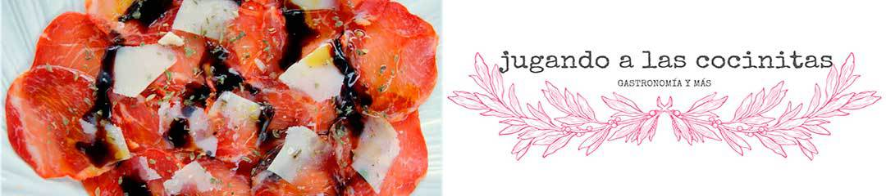
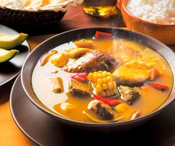
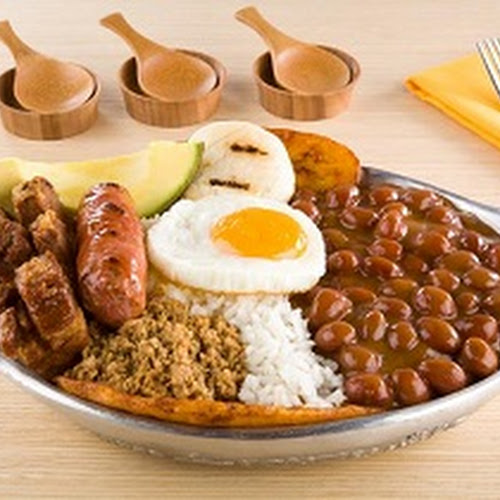
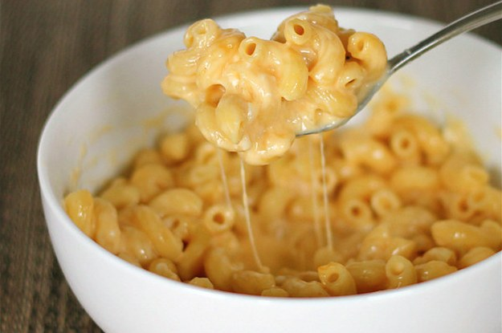

Delicias
Favoritos:





Publicado el 7 de noviembre de 2017
Es un alimento en forma de bocadillo de carne picada aglutinada en forma de filete, cocinado a la parrilla o a la plancha, aunque también puede freírse u hornearse. Fuera del ámbito de habla hispana es más común encontrar la denominación inglesa burger. Se presenta en un pan ligero partido en dos que posee una forma de óvalo.
Publicado el 7 de mayo de 2018
Es el plato más representativo de la región, típico de la cocina antioqueña, correspondiente a los actuales territorios de Antioquia, el Viejo Caldas o Eje Cafetero (Caldas, Quindío y Risaralda), parte del norte del Valle del Cauca y el norte del Tolima, Colombia. Característica fundamental de este plato es su enorme abundancia, tanto en cantidad como en variedad de alimentos, de tal modo que la bandeja paisa completa solo cabe servirla en platos grandes llamados bandejas.